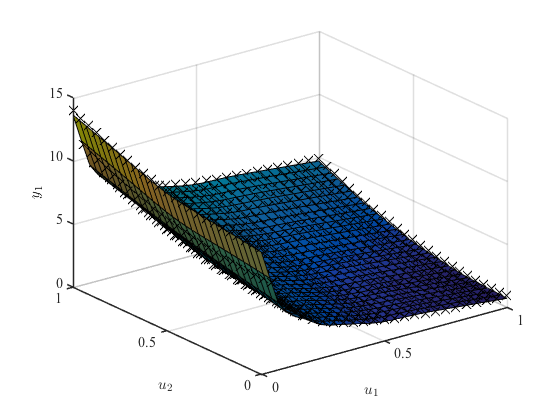
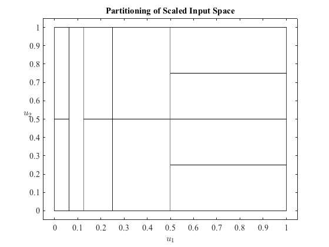

lolimotDemo6 Demo 6: Estimate a model given an initial structure
LoLiMoT - Nonlinear System Identification Toolbox
Torsten Fischer, 20-October-2011
Institute of Mechanics & Automatic Control, University of Siegen, Germany
Copyright (c) 2012 by Prof. Dr.-Ing. Oliver Nelles
LMN = lolimot;
[u1g, u2g] = meshgrid(linspace(0,1,25), linspace(0,1,25));
u1 = u1g(:);
u2 = u2g(:);
y = 1./(0.1+u1) + (2*u2).^2;
LMN.input = [u1 u2];
LMN.output = y;
LMN.leafModels = true(1,6);
lowerLeftCorner = [0 0; 0.0625 0; 0.125 0; 0.25 0; 0.5 0.5; 0.5 0];
upperRightCorner = [0.0625 1; 0.125 1; 0.25 1; 0.5 1; 1 1; 1 0.5];
for k = 1:size(lowerLeftCorner,1)
LMN.localModels = [LMN.localModels gaussianOrthoLocalModel(lowerLeftCorner(k,:),upperRightCorner(k,:),LMN.smoothness)];
end
LMN.maxNumberOfLM = 15;
LMN.minError = 0.05;
LMN.kStepPrediction = 0;
LMN.history.displayMode = true;
LMN = LMN.train;
[u1g, u2g] = meshgrid(linspace(0,1,30), linspace(0,1,30));
u1G = u1g(:);
u2G = u2g(:);
yG = 1./(0.1+u1G) + (2*u2G).^2;
uG = [u1G u2G];
yGModel = calculateModelOutput(LMN, uG, yG);
JG = calcGlobalLossFunction(LMN ,yG, yGModel);
figure
LMN.plotModel
figure
LMN.plotPartition
figure
LMN.plotMSFValue
xInputDelay is empty, defaults are used: xInputDelay(1:p) = {0}
zInputDelay is empty, defaults are used: zInputDelay(1:p) = {0}
xOutputDelay is empty, defaults are used: xOutputDelay(1:p) = {[]}
zOutputDelay is empty, defaults are used: zOutputDelay(1:p) = {[]}
Initial net has 6 local linear model(s): J = 0.095360.
1. Iteration. Number of local linear models = 6. Checking for split of model 4 ...
Testing split in dimension 1 with ratio 0.50: J = 0.095521.
Testing split in dimension 2 with ratio 0.50: J = 0.076233.
-> Splitting in dimension 2 with ratio 0.50: J = 0.076233 and penalty = 0.077867.
2. Iteration. Number of local linear models = 7. Checking for split of model 1 ...
Testing split in dimension 1 with ratio 0.50: J = 0.075066.
Testing split in dimension 2 with ratio 0.50: J = 0.067543.
-> Splitting in dimension 2 with ratio 0.50: J = 0.067543 and penalty = 0.069144.
3. Iteration. Number of local linear models = 8. Checking for split of model 3 ...
Testing split in dimension 1 with ratio 0.50: J = 0.067621.
Testing split in dimension 2 with ratio 0.50: J = 0.054450.
-> Splitting in dimension 2 with ratio 0.50: J = 0.054450 and penalty = 0.055822.
4. Iteration. Number of local linear models = 9. Checking for split of model 6 ...
Testing split in dimension 1 with ratio 0.50: J = 0.052840.
Testing split in dimension 2 with ratio 0.50: J = 0.051941.
-> Splitting in dimension 2 with ratio 0.50: J = 0.051941 and penalty = 0.053372.
5. Iteration. Number of local linear models = 10. Checking for split of model 5 ...
Testing split in dimension 1 with ratio 0.50: J = 0.049876.
Testing split in dimension 2 with ratio 0.50: J = 0.046531.
-> Splitting in dimension 2 with ratio 0.50: J = 0.046531 and penalty = 0.047930.
Error limit reached.
Final net has 11 local models and 33 parameters: J = 0.046531
Net 6 with 11 LMs and 33 parameters is suggested as the model with the best complexity trade-off.
Plot model for dimensions 1 and 2.
ans =
1×16 cell array
Columns 1 through 8
[] [1×1 Line] [] [] [] [] [1×1 Line] [1×1 Line]
Columns 9 through 13
[1×1 Line] [1×1 Line] [1×1 Line] [1×1 Line] [1×1 Line]
Columns 14 through 16
[1×1 Line] [1×1 Line] [1×1 Line]
 